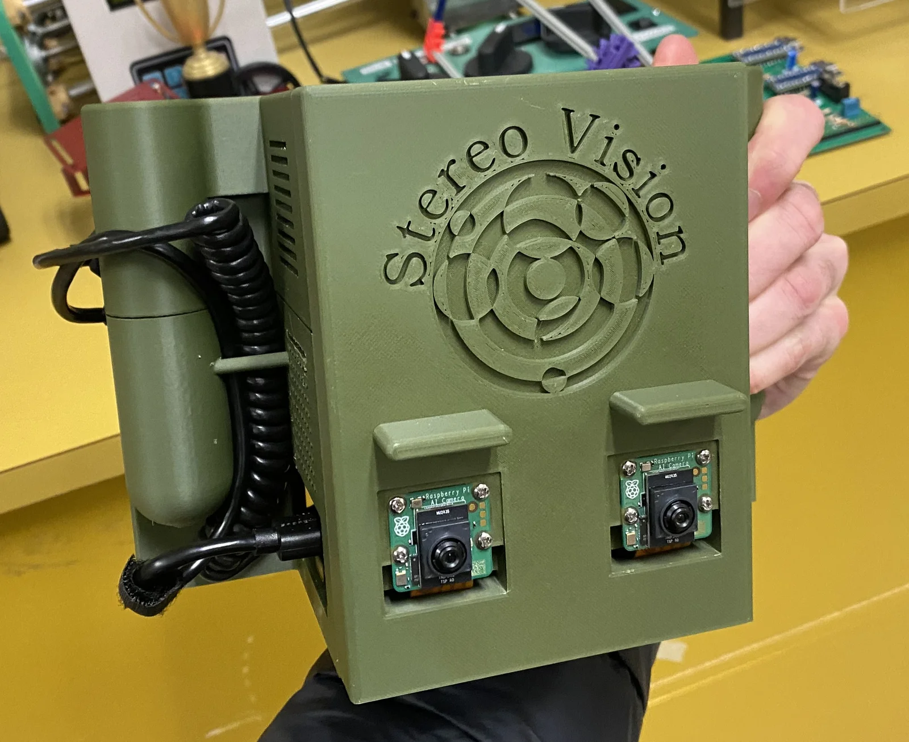
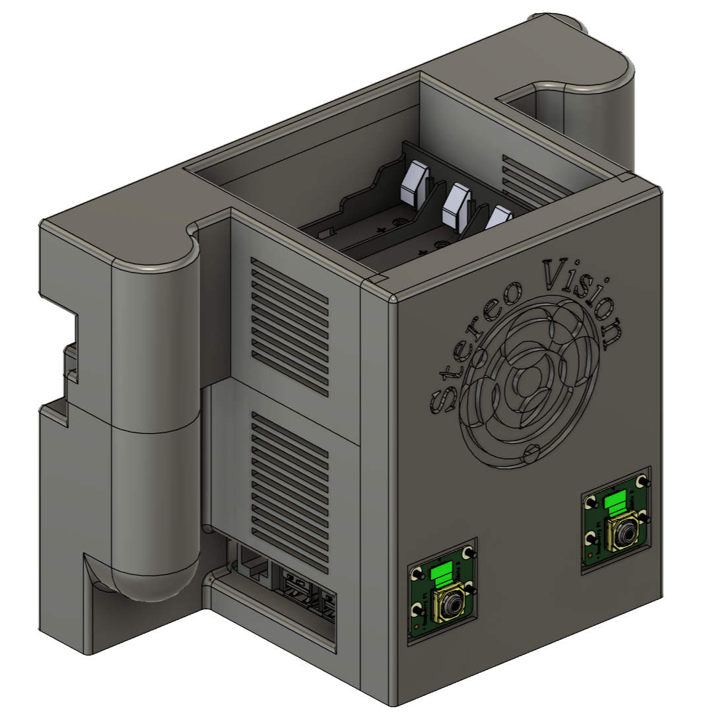
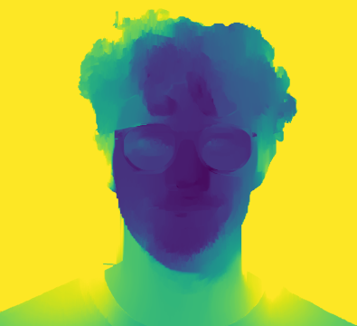
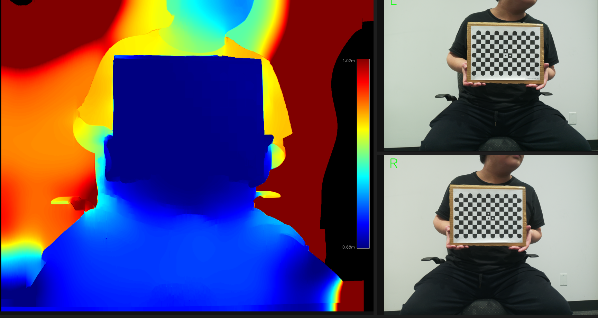

Computer vision · Hardware
Stereo Vision System
Developed and built a handheld stereo vision system as a low-cost solution to 3D scanning. This project uses a Raspberry PI 5 as the main processor, Raspberry PI AI cameras (Sony IMX500 sensors), integrated with a touchscreen display. The device is battery powered through a custom designed power supply with a 6+ hour battery life. The software is python based and uses OpenCV computer vision processing to take the two captured images and convert it in real time to a 3D depth maps that can wirelessly transferred to an external device for further analysis. The vision system was meticulously developed, calibrated, tested and refined to achieve an accuracy of 2.24mm (depth RMSE error)



